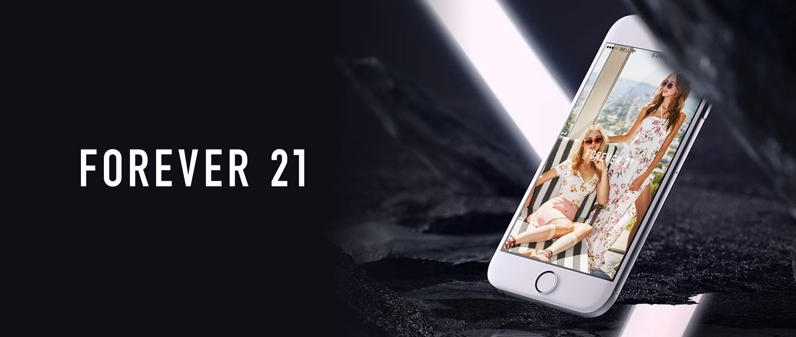

portfolio - 1
Mobile App
Forever 21 New Mobile App
Former Forever 21 App was based on a hybrid app that combined Mobile Web and App. Executive Team requested to improve UI/UX and increase conversion rate. The most challenging aspect was to re-develop not only User Interface but also the User Experience for the New Native App. I conducted an audit of the existing mobile Web, App and analyzed the user experience. Also, I researched the competitors and established the best practices based on my competitor survey. On top of that, I was incharged of UI design for new app.